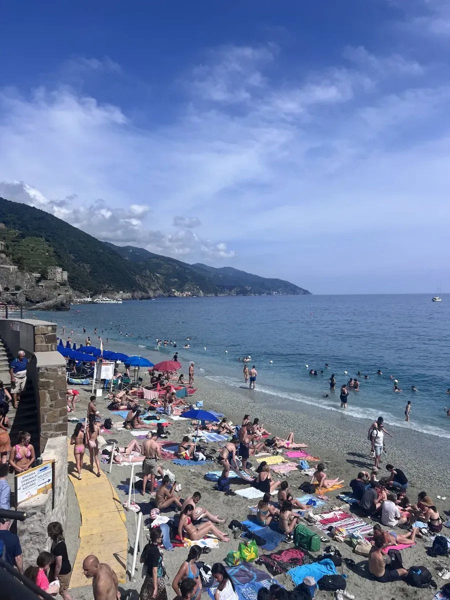
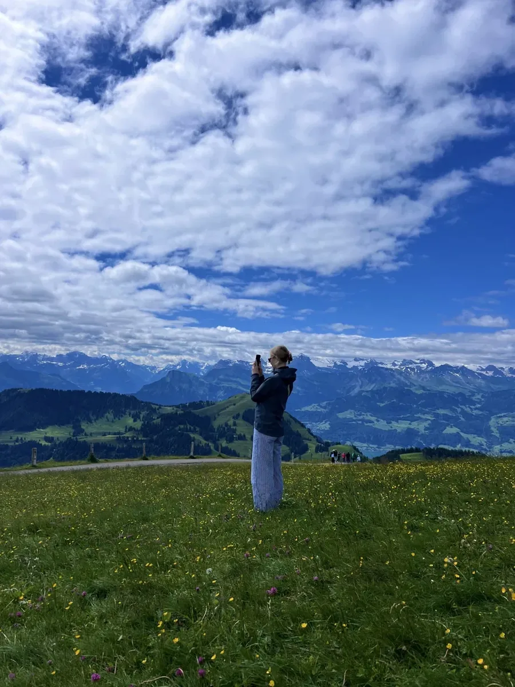
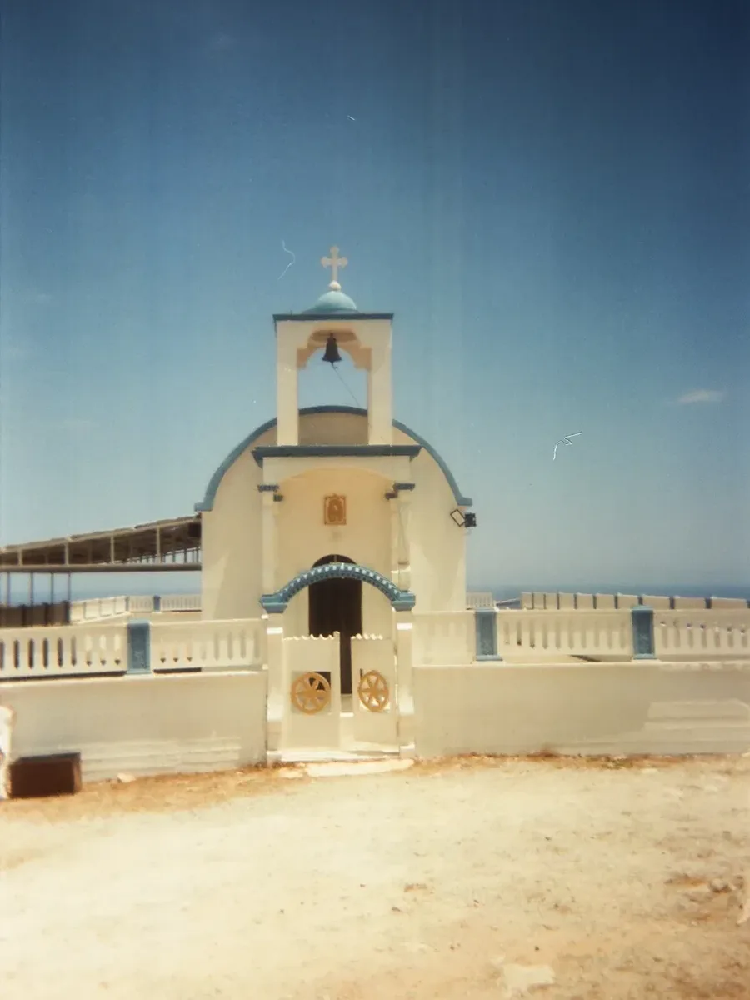
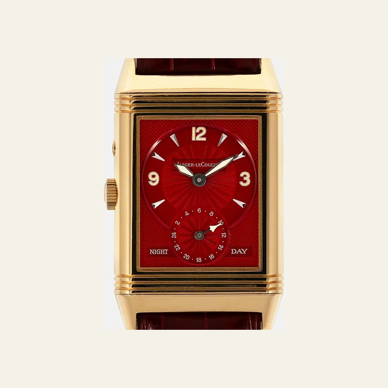
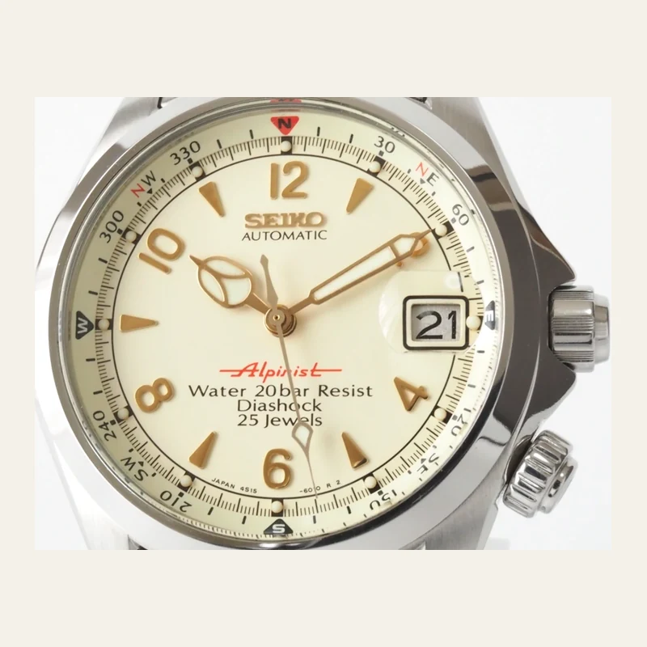
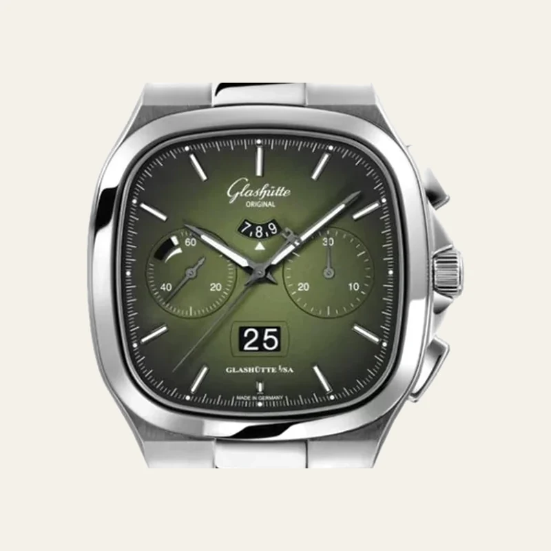

Played drums in jazz band, ran cross country, played center in basketball. Briefly convinced this was the Larry Bird route
Watched logistics happen firsthand inside John Deere’s parts warehouse, one of the largest in the country
Tulsa, Oklahoma
Studied finance at Oral Roberts University
Co-founded and ran M&G Journal, a student-run finance publication covering capital markets, startups and careers, connecting students across private equity, investment banking and personal financial planning so they saw the whole field rather than one corner
Co-founded Sky Ventures, Oklahoma’s first student-run accelerator, five universities, six companies through the cohort, $50,000 deployed
Volunteered for Junior Achievement, helping teach financial literacy and an entrepreneurial mindset to elementary students
Risk-rated fintech and cannabis-adjacent accounts at Regent Bank, running onboarding through committee review inside a heavily regulated shop
Help founders build, launch and grow companies at i2E, connecting them to capital across the region
Hobbies
03 — Off duty
Photography
Catching vibes, trying to catch a photo.
Passenger Ticket and Baggage Check · Issued subject to conditions of contract
To
Carrier
Flight
Class
SZG
PA
114
Y
Salzburg, Austria
Fare basis YLE45Routing SZG PA MUCNot transferable026 4447 85332 4
Shot from the fortress. Domes, the river, and the whole city under low grey.
Passenger Ticket and Baggage Check · Issued subject to conditions of contract
To
Carrier
Flight
Class
VIE
PA
118
Y
Vienna, Austria
Fare basis YHX60Routing VIE PA FRANot transferable026 5108 21744 9
Empty street at dusk. Wet cobbles, bronze statues mid-throw on both sides.

Passenger Ticket and Baggage Check · Issued subject to conditions of contract
To
Carrier
Flight
Class
PSA
PA
220
Y
Cinque Terre, Italy
Fare basis YLW14Routing PSA PA MXPNot transferable026 7731 40915 2
Monterosso in September. Umbrellas all the way down to the water.

Passenger Ticket and Baggage Check · Issued subject to conditions of contract
To
Carrier
Flight
Class
ZRH
PA
046
Y
Lucerne, Switzerland
Fare basis YEE30Routing ZRH PA LHRNot transferable026 2294 66180 7
Up the Rigi. Alps on every side and a meadow full of buttercups.

Passenger Ticket and Baggage Check · Issued subject to conditions of contract
To
Carrier
Flight
Class
HER
PA
512
Y
Heraklion, Crete
Fare basis YHG21Routing HER PA ATHNot transferable026 8815 03627 5
A white chapel above the sea. Blue dome, one bell, nobody else up there.
Passenger Ticket and Baggage Check · Issued subject to conditions of contract
To
Carrier
Flight
Class
CHQ
PA
516
Y
Chania, Crete
Fare basis YHG21Routing CHQ PA ATHNot transferable026 3360 97251 8
Warm stone, low sun, the sea just past the wall.
Watches

Stamp +
Origin
Switzerland — Vallée de Joux
Founded
1833
Maison founded. The Reverso itself dates to 1931.
Made for
Polo. The case pivots in its carrier so the crystal can be turned face-down against a mallet strike.

Stamp +
Origin
Japan — Nagano
Founded
1959
The Alpinist line. Seiko itself dates to 1881.
Made for
Mountaineering. An inner compass ring takes a bearing off the sun, for climbers carrying no instruments.

Stamp +
Origin
Germany — Glashütte, Saxony
Founded
1845
Watchmaking in the town. The brand name is far younger.
Made for
Precision timing. A chronograph built to measure elapsed intervals, not to be worn underwater.